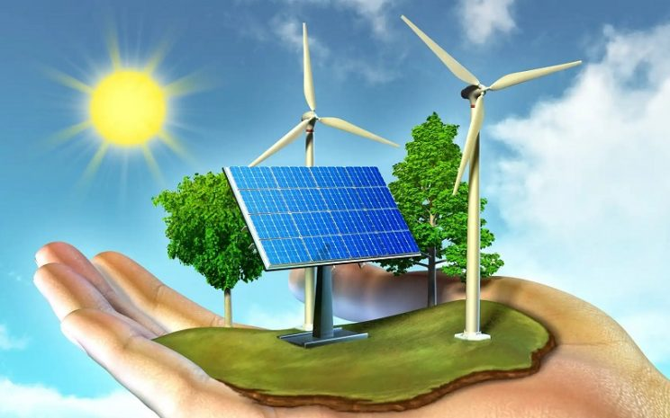

Crecimiento de la energía renovable: Un futuro sostenibleLa transición hacia fuentes de energía más limpias y sostenibles |
||
SeccionesOtras Noticias
Acceso |
El camino hacia un futuro sostenible a través de la energía renovableLa energía renovable está emergiendo como una de las principales soluciones para combatir el cambio climático y garantizar un futuro más sostenible. A medida que los combustibles fósiles se agotan y las preocupaciones sobre las emisiones de gases de efecto invernadero crecen, las energías renovables, como la solar, eólica, hidroeléctrica y geotérmica, se están consolidando como alternativas viables y eficientes. El crecimiento de la energía renovable es un fenómeno global que se está acelerando en muchas partes del mundo. Con el aumento de la capacidad instalada, la caída de los costos de producción y la mejora de las tecnologías, las energías renovables están desempeñando un papel fundamental en la transición energética. Beneficios de las energías renovablesLas energías renovables no solo son más limpias y menos contaminantes, sino que también ofrecen una serie de beneficios económicos y sociales. A medida que las inversiones en energías limpias crecen, se generan miles de empleos en sectores como la fabricación de paneles solares, la construcción de parques eólicos y la instalación de infraestructuras hidroeléctricas. El papel de la energía solar y eólicaLas fuentes de energía solar y eólica están a la vanguardia de la transición hacia un futuro más verde. Los avances tecnológicos en paneles solares y turbinas eólicas han permitido que estas energías sean más accesibles, con una disminución constante de los costos. Además, ambas tecnologías han demostrado ser altamente eficientes, contribuyendo significativamente a la generación de energía limpia. Desafíos en la adopción de energías renovablesA pesar del rápido crecimiento, existen varios desafíos en la adopción generalizada de la energía renovable. Uno de los principales obstáculos es la intermitencia de las fuentes solares y eólicas, que dependen de las condiciones climáticas para su generación. La falta de infraestructura adecuada en algunas regiones también puede limitar la expansión de estas tecnologías. Sin embargo, los avances en almacenamiento de energía y la mejora de las redes eléctricas están ayudando a superar estas barreras. El futuro de la energía renovableA medida que los gobiernos de todo el mundo implementan políticas para reducir las emisiones de carbono y promover la transición energética, la energía renovable se consolidará aún más como la base de la matriz energética global. Con los avances tecnológicos continuos y la inversión en investigación y desarrollo, el futuro de la energía renovable parece prometedor y se espera que desempeñe un papel crucial en la lucha contra el cambio climático. Audio de un expertoEscucha a un experto hablar sobre el impacto de las energías renovables en el futuro sostenible. |
Noticias Recientes |
|
© 2025 Noticias Hoy - Todos los derechos reservados |
||